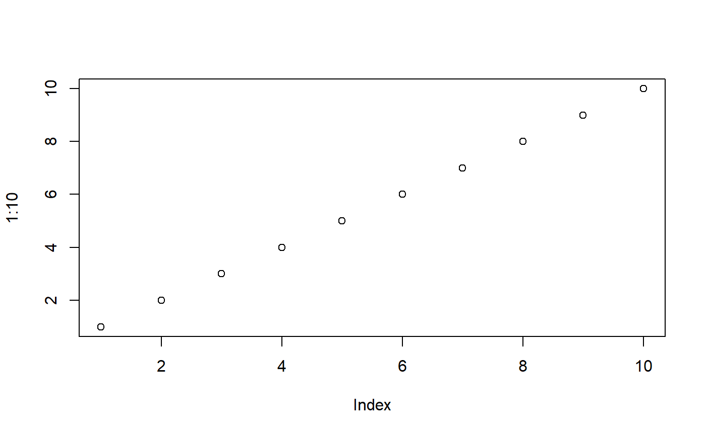
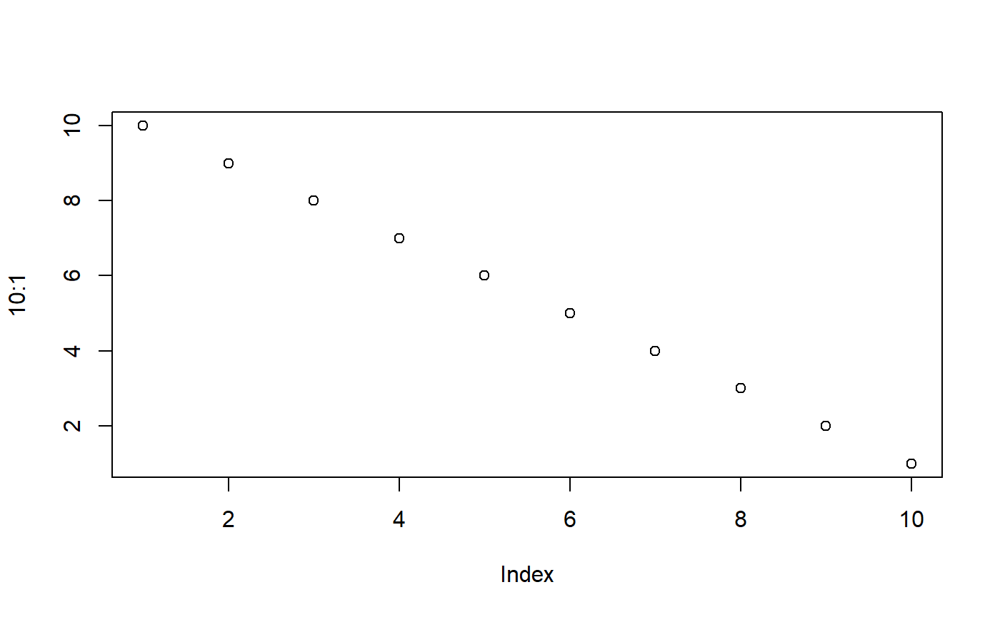

ptools.RmdThis packages provides basic R and Hadoop wrapper function to handle file movement in pipelines.
This vignette will provide one example of specific implementation. You can modify the number of steps and organisation of physic files / tabulated data to fit your expectation.
The flat files (e.g csv) is processed in order from landing, data/raw, data/intermediate and data/final. Those folder will be used here :
Let full_trains be an incoming dataset in landing about french SNCF trains delay :
| year | month | service | departure_station | arrival_station | journey_time_avg |
|---|---|---|---|---|---|
| 2017 | 9 | National | PARIS EST | METZ | 85.13378 |
| 2017 | 9 | National | REIMS | PARIS EST | 47.06452 |
| 2017 | 9 | National | PARIS EST | STRASBOURG | 116.23494 |
| 2017 | 9 | National | PARIS LYON | AVIGNON TGV | 161.08958 |
| 2017 | 9 | National | PARIS LYON | BELLEGARDE (AIN) | 164.45263 |
| 2017 | 9 | National | PARIS LYON | BESANCON FRANCHE COMTE TGV | 128.52105 |
| 2017 | 9 | National | CHAMBERY CHALLES LES EAUX | PARIS LYON | 183.91827 |
| 2017 | 9 | National | PARIS LYON | GRENOBLE | 186.32710 |
| 2017 | 9 | National | LYON PART DIEU | PARIS LYON | 121.28333 |
| 2017 | 9 | National | PARIS LYON | MACON LOCHE | 97.43781 |
This file is in .rds format, a R specific compression format. It could have been .json, csv, tsv… I should decide to use only one format in the following pipeline : here I will convert all files to csv and write them to raw.
Then you can do some cleaning / type conversion and store thme to intermediate :
Before performing maybe some pivot table :
Then you create (or recreate here) tables :
And you can perform joins.
Do your analysis
Clean even more, ML :
Markdown results
Shiny eventually.
Vignettes are long form documentation commonly included in packages. Because they are part of the distribution of the package, they need to be as compact as possible. The html_vignette output type provides a custom style sheet (and tweaks some options) to ensure that the resulting html is as small as possible. The html_vignette format:
Note the various macros within the vignette section of the metadata block above. These are required in order to instruct R how to build the vignette. Note that you should change the title field and the \VignetteIndexEntry to match the title of your vignette.
The html_vignette template includes a basic CSS theme. To override this theme you can specify your own CSS in the document metadata as follows:
output:
rmarkdown::html_vignette:
css: mystyles.cssThe figure sizes have been customised so that you can easily put two images side-by-side.

You can enable figure captions by fig_caption: yes in YAML:
output:
rmarkdown::html_vignette:
fig_caption: yesThen you can use the chunk option fig.cap = "Your figure caption." in knitr.
You can write math expressions, e.g. \(Y = X\beta + \epsilon\), footnotes1, and tables, e.g. using knitr::kable().
| mpg | cyl | disp | hp | drat | wt | qsec | vs | am | gear | carb | |
|---|---|---|---|---|---|---|---|---|---|---|---|
| Mazda RX4 | 21.0 | 6 | 160.0 | 110 | 3.90 | 2.620 | 16.46 | 0 | 1 | 4 | 4 |
| Mazda RX4 Wag | 21.0 | 6 | 160.0 | 110 | 3.90 | 2.875 | 17.02 | 0 | 1 | 4 | 4 |
| Datsun 710 | 22.8 | 4 | 108.0 | 93 | 3.85 | 2.320 | 18.61 | 1 | 1 | 4 | 1 |
| Hornet 4 Drive | 21.4 | 6 | 258.0 | 110 | 3.08 | 3.215 | 19.44 | 1 | 0 | 3 | 1 |
| Hornet Sportabout | 18.7 | 8 | 360.0 | 175 | 3.15 | 3.440 | 17.02 | 0 | 0 | 3 | 2 |
| Valiant | 18.1 | 6 | 225.0 | 105 | 2.76 | 3.460 | 20.22 | 1 | 0 | 3 | 1 |
| Duster 360 | 14.3 | 8 | 360.0 | 245 | 3.21 | 3.570 | 15.84 | 0 | 0 | 3 | 4 |
| Merc 240D | 24.4 | 4 | 146.7 | 62 | 3.69 | 3.190 | 20.00 | 1 | 0 | 4 | 2 |
| Merc 230 | 22.8 | 4 | 140.8 | 95 | 3.92 | 3.150 | 22.90 | 1 | 0 | 4 | 2 |
| Merc 280 | 19.2 | 6 | 167.6 | 123 | 3.92 | 3.440 | 18.30 | 1 | 0 | 4 | 4 |
Also a quote using >:
“He who gives up [code] safety for [code] speed deserves neither.” (via)
A footnote here.↩